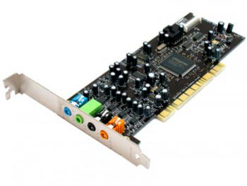

Выбор звуковой карты.

Для того, чтобы на компьютере можно было слушать музыку, играть в различного вида игры, смотреть фильмы, кино, мультфильмы и так далее, требуется звуковая карта. Нужна звуковая карта для того, чтобы из
цифровой информации создавать аналоговый сигнал. Потом этот аналоговый сигнал передаётся в наушники либо в колонки. Но таким же образом можно делать и наоборот. Тоесть вы сможете сами записать звук.
На сегодняшний день много различных звуковых карт и они стали действительно мощнее и с более расширенными функциями. Вы так же сможете обрабатывать звук и выводить звук. Так же с помощью звуковой карты
можно подключать вторичные устройства к компьютеру. Допустим это могут быть какие-то звуковые инструменты. Если вы будете выбирать хорошую звуковую карту, то и финансов вы заплатите конечно же больше.
Если это профессиональная звуковая карта, которая может поддерживать всё что можно, то она обойдется примерно в 100 американских рублей.
Если же вы обычный пользователь и вам звук не так важен, то советую остановиться на простой звуковой карте, которая встроена в материнскую плату. Находится звуковая карта на панеле материнской платы в
задней части. В современных
компьютерах для продажи чипы производят по стандартам. Стандарт этот HDA, это значит High Definition Audio. Такие стандарты можно сказать не плохие
и дают хороший звук в игре и прослушивании музыки, а так же для просмотра фильмов.
Но и у таких звуковых карт есть свои недостатки. Допустим во время просмотра фильма, могут слышаться шумы. Это всё зависит от качества производителя. Но в основном в звуковых картах средней цены
каких-то поломок не наблюдается.
Если же вы захотите улучшить свой звук, то вам стоит не хило опустошить свой карман. Так как хороший звук стоит очень дорого. Не забывайте, что купив хорошую звуковую карту - вам потребуются такие же
хорошие колонки для компьютера или наушники. Иначе звук будет оставаться таким же.
Обычно профессиональные модели звуковых карт выберают те люди, которые хотят записывать музыку. При выборе учитывайте все факторы. Какое у вас помещение, какая мощность требуется, технические
характеристки и так далее. Но это уже относится ближе к музыкальной сфере, а не к компьютерной.
Если вы хотите именно какого-то производителя, то можно посоветовать ASUS, ECHO, ESI, Creative. Это на мой взгляд одни из лучших производителей звуковых карт.
Конкретных указаний по выбору нет, для каждого это свой собственный выбор. Вы должны выбирать по своему карману (тоесть по финансам) и по тому, чем вы собираетесь заниматься. В интернете можете найти
описание практических всех звуковых плат. Вы можете подробно рассмотреть производителей и сами звуковые платы в интернете, а потом уже проехать по своему городу и выбрать нужную вам модель.
Следующая статья:
Твердотельный SSD накопитель, преимущества и недостатки.